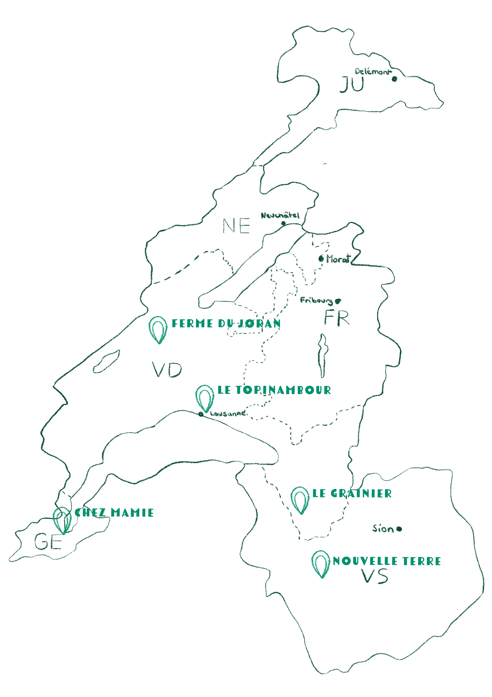

À propos de nous !
Semences de pays développe une production de semences reproductibles, rustiques et adaptées à une agriculture biologique proche des cycles de la nature, en collaboration avec les initiatives nourricières de proximité.
Point de vente
a Chez Mamie
Rue des Rois 17
1204 Genève
Le Topinambour
Avenue William-Fraisse 9
1006 Lausanne
Ferme du Joran
Ch. des Philosophes 15
1350 Orbe
Le Grainier
Route des Mines de Sel 13
1880 Bex
Nouvelle Terre
Rue du Grand-Verger 12
1920 Martigny